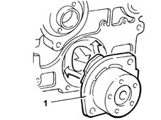

INTRODUCTION - WATER PUMP AND THERMOSTAT
- Path
- Descriptions > 10 ENGINE > 1088 ENGINE COOLING > 1088C WATER PUMP AND THERMOSTAT > INTRODUCTION - WATER PUMP AND THERMOSTAT
- Kind
- system description
- Applies to
- engines: 1.2 8v, 1.6 16v, 1.3 JTD 16V, 1.9 JTD 8V; all production periods; only with equipment: BIPOWER
- Interactive page
- https://sloeber94.github.io/elrnDB-fDbl/en/#/223000254
Applies to: engines: 1.2 8v; all production periods
COOLANT PUMP
It is the centrifugal type with vanes, fixed to the crankcase and directly directly by the timing belt.

THERMOSTAT
Mounted on the rear of the cylinder head, its function is to keep the engine at the optimum temperature:
- with temperature lower than 88° C (thermostat closed), the coolant flow is diverted directly upstream of the pump.
- with temperature higher than 88° C, the thermostat begins to open until the temperature is about 100° C (thermostat fully open).
Applies to: engines: 1.6 16v; all production periods
WATER PUMP
It is the centrifugal type with vanes, fixed to the crankcase and directly directly by the timing belt.
THERMOSTAT
Mounted on the rear of the cylinder head, its function is to keep the engine at the optimum temperature:
- at a temperature of < 83 ± 2° C, the thermostatic valve (closed) diverts the coolant directly to the pump
- at a temperature of > 83 ± 2° C, the thermostatic valve (open) conveys coolant to the radiator.
The coolant temperature sensor connected to the fuel injection control unit is fitted to the thermostat (see see 1056).
Applies to: engines: 1.3 JTD 16V; all production periods
WATER PUMP
It is the centrifugal vane type, with an aluminium alloy pump casing and phenolic resin impeller.
Secured to the engine block and driven directly by the service belt.
THERMOSTAT
Mounted on the rear of the cylinder head, its function is to keep the engine at the optimum temperature:
- at a temperature of < 80 ± 2° C the (closed) thermostatic valve directs the coolant directly to the pump
- at a temperature of > 80 ± 2° C the (open) thermostatic valve directs the coolant to the radiator.
The engine coolant temperature sensor, connected to the injection control unit and the instrument panel, is fitted on the thermostat
See descriptions 1060G DIESEL INJECTION PRESSURE PUMP ELECTRONIC CONTROL
.
Applies to: engines: 1.9 JTD 8V; all production periods
COOLANT PUMP
It is the centrifugal vane type, with an aluminium alloy pump casing (1) and phenolic resin impeller.
Secured to the engine block and driven directly by the timing belt.
THERMOSTAT
Mounted on the rear of the cylinder head, its function is to keep the engine at the optimum temperature:
- at a temperature of < 80 ± 2° C the (closed) thermostatic valve directs the coolant directly to the pump
- at a temperature of > 80 ± 2° C the (open) thermostatic valve directs the coolant to the radiator.
Mounted on the thermostat, there is the coolant temperature sensor connected to the fuel injection control unit (see 1060).
Applies to: engines: 1.6 16v; all production periods; only with equipment: BIPOWER
It is the centrifugal type with vanes, fixed to the crankcase and directly directly by the timing belt.
THERMOSTAT
Mounted on the rear of the cylinder head, its function is to keep the engine at the optimum temperature:
- at a temperature of < 83 ± 2° C, the thermostatic valve (closed) diverts the coolant directly to the pump
- at a temperature of > 83 ± 2° C, the thermostatic valve (open) conveys coolant to the radiator.
The coolant temperature sensor connected to the fuel injection control unit is fitted to the thermostat (see see 1056).